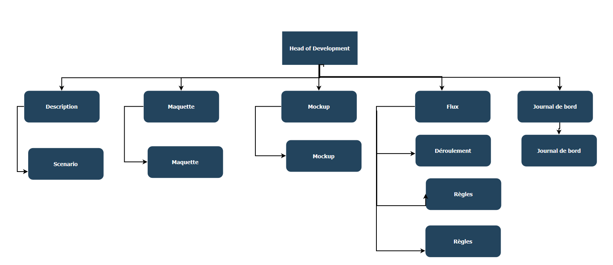

Flux et sitemap de votre projet
Par Biollaz Benjamin, Gaillard Nathan et De Blasi Simon le 31/03/2022 à 14:45
Flux
Le joueur doit éliminer des vagues d’ennemis apparaissant en groupe selon le niveau (Règle 1). Le joueur élimine les ennemis en tirant des projectiles qui lui consomment de la santé (Règle 2). Si un ennemi touche le joueur, il perd également de la santé (Règle 3). La santé se régénère quand le joueur entre en collision avec des points de santé apparaissant périodiquement (Règle 4 & 5). Des armes apparaîssent périodiquement et améliore l'attaque du joueur (Règle 6, 7 & 8). Le joueur perd lorsqu'il n'a plus de santé (Règle 9).
Règles
- Des ennemis apparaissent à chaque niveau selon ce calcul : 2x niveau - 1.
- Chaque tir engendre un projectile et consomme 0.2% de la santé maximale.
- Lorsqu'un ennemi entre en collision avec un joueur, il perd 20% de la santé maximale.
- Un point de santé apparaît chaque 3 niveaux.
- Lorsque le joueur entre en collision avec le point de santé, il gagne un tiers de la santé maximale.
- Une arme apparaît chaque 5 niveaux.
- Lorsque le joueur entre en collision avec l'arme, il l'équipe automatiquement pour 10 secondes.
- Lorsque le joueur est équipé d'une arme, il peut tirer sans perdre de vie et à un rythme plus élevé.
- Lorsque le joueur n'a plus de santé, il perd. Il peut recommencer au niveau 1 en pressant la barre d'espace.
Sitemap
HTML
XML
XML sitemapLe code source de l'application est disponible sur le github du projet.